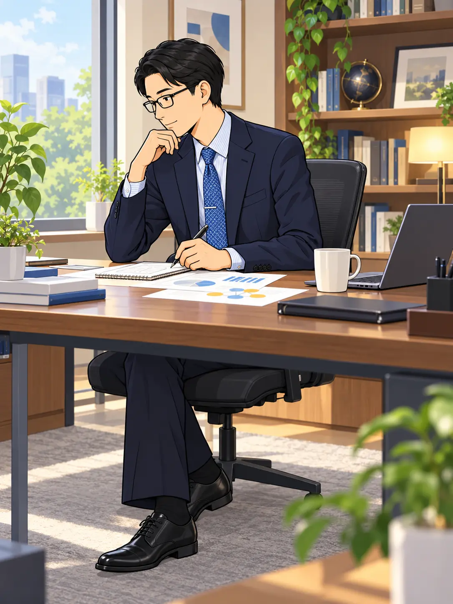
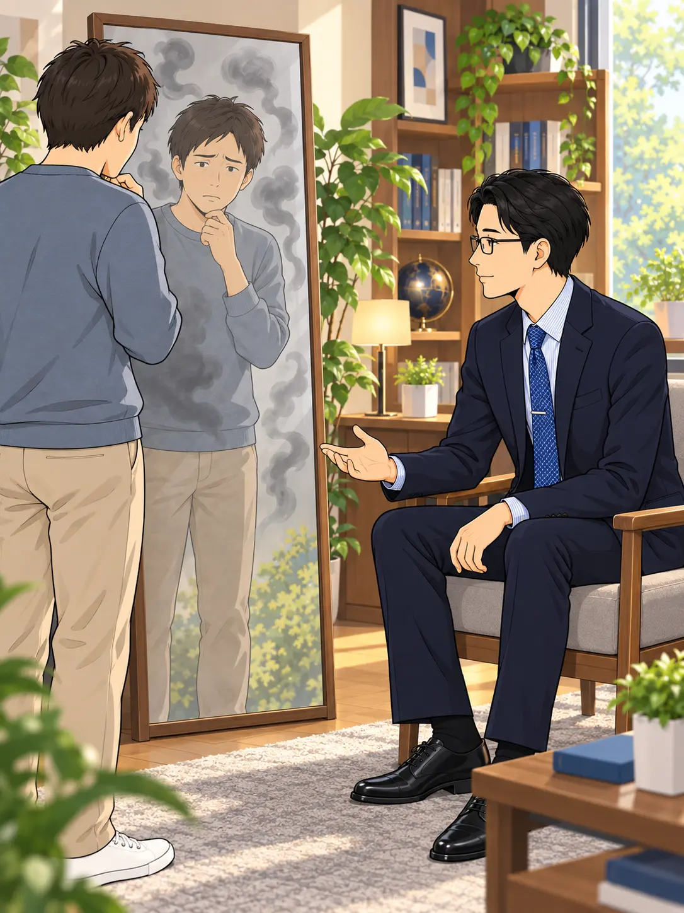
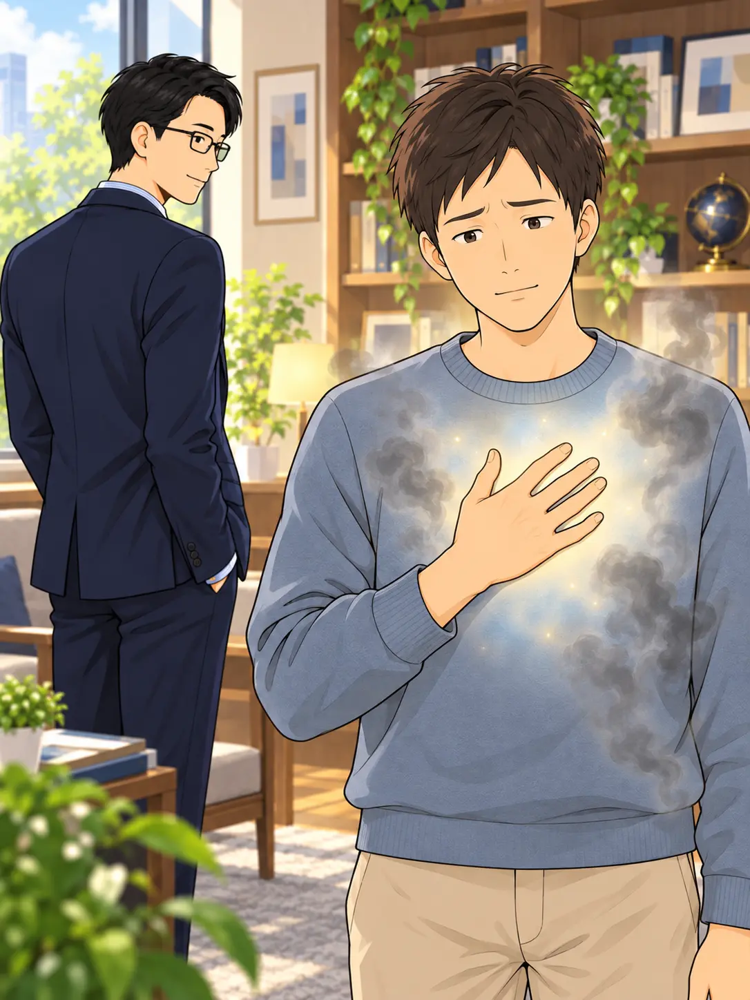
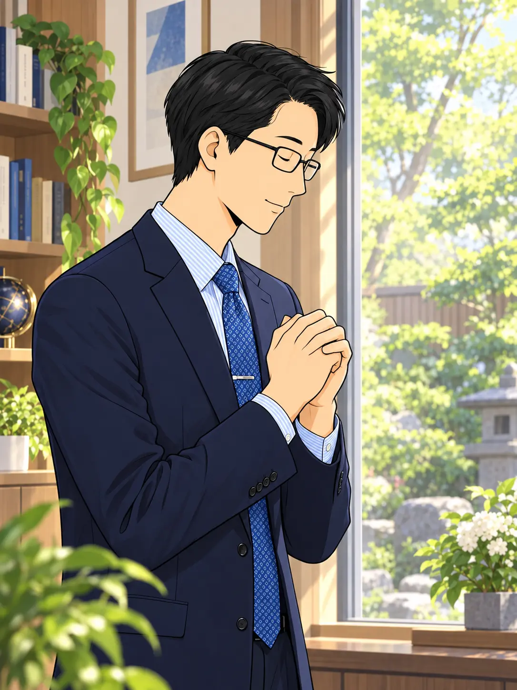
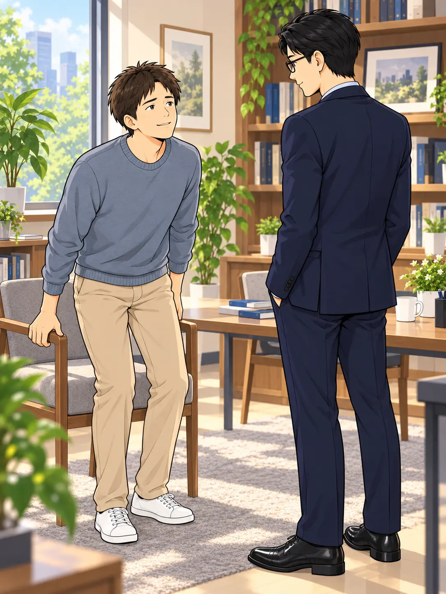
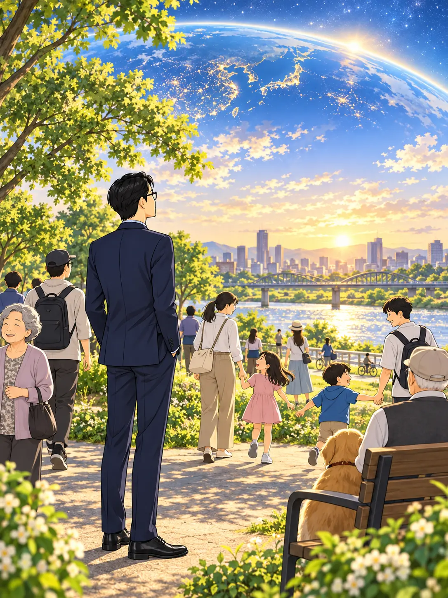
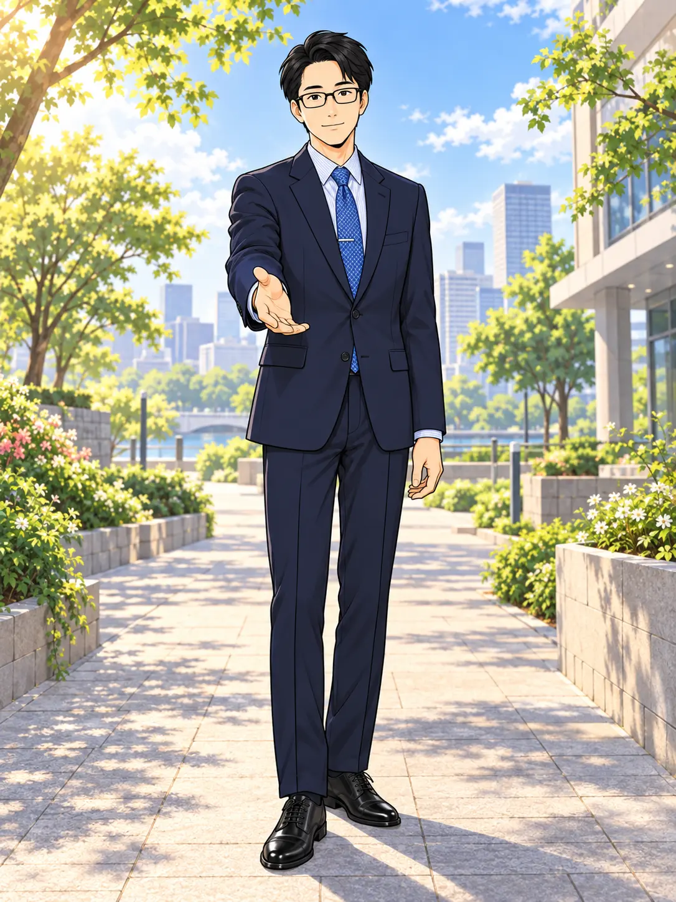

長い探究の末に切り開いた道を、
日々の暮らしで実践できる形へ。

特別な人だけの道で
終わらせたくない。
誰もが、日常から始められるように。
先生はその道を、
「自明行」として伝えていった。
まず、見つめるのは
自分自身の心だった。

格好つけや被害者意識。
自分の醜い心も隠さず、
素直に認めることから始まる。
取り繕わずに、自分を見る。
それが最初の一歩になる。
気づいた嘘や偽りから、
目をそらさない。

「自明の光！」を
自分の心に照らすのだ。
嘘や偽りを、素直に認める。
そうすることで、エゴの執着が
消え去っていくのだと、先生は語る。
素直な自分に戻り、
今日も生かされていることに
感謝を捧げる。

日常の中で、
《超越人格》へと還る。
それが「自明行」なのだ。
朝の静けさの中でも、
いつもの暮らしの中でも。
うまくできない自分に、
向き合う日もある。

ダメな自分に直面することは
恥ではない。
逃げずに認めた瞬間こそ、
本当の人生のスタートなのだ！
肩の力を抜き、
もう一度、立ち上がる。
先生が伝えたかったのは、
人間への深い信頼だった。

人間は最初から、
苦しむためではなく、
救われ、幸せになるために
創られているのだから。
その言葉は、特別な誰かではなく、
日々を生きる人々へと向けられている。
そして先生は、
あなたへと手を差し伸べる。

過去がどうであれ、関係ない。
あなたも今ここから
「人間やりなおし」ができる。
さあ、私と一緒に
新しい人生を歩もう！
今いる場所から、
あなたの一歩を。